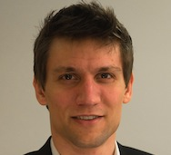

 Alumnus Stuart B. Heinrich received his B.S. in Computer Science, with a minor in Electrical Engineering, from the University of Vermont in 2006. A native of Hinesburg, VT, Stuart was a Vermont Scholar and made the Dean’s List during each of his 4 years at UVM.
As an undergraduate, Stuart worked part-time as a database manager at the UVM extension service and did several internships including one summer with VT HITEC as a programming team leader at Fletcher Allen Health Care, one summer doing a National Science Foundation Research Experience for Undergraduates internship at Texas A&M where he helped to develop computational models of the visual cortex, and a Department of Energy summer research internship at Argonne National Laboratory where we worked on analysis and visualization of TeraGrid usage.
While at UVM Stuart was also vice president of the UVM Target Shooting Club for 2 years, won 2nd place is the Volney Giles Barbour Engineering Essay contest, and presented his winning essay as a speaker at the College of Engineering and Mathematical Sciences Graduation Ceremony in 2006. After graduating from UVM, Stuart headed to graduate school in computer Science at North Carolina State University, where he received his M.S. in Computer Science in 2008 and earned his Ph.D. in Computer Science in 2011 with a 4.0 GPA, a strong dissertation in computer vision entitled “Maximum Likelihood Methods for Hierarchical Structure from Motion of Uncalibrated Video”, and several peer-reviewed publications.
At NSCU Stuart was initially funded in part by a research internship from the Army Research Office and through graduate teaching assistantships, but later was employed as primary instructor for several computer science courses at both NSCU and nearby Shaw University. In addition to his academics, Stuart became active in NSCU theater, where he held acting roles as Kapellmeister Bono in Amadeus, Harry Haywood (as Clarence the Angel) in It’s a Wonderful Life, and Ross in MacBeth.
After completing his PhD, Stuart was quickly snapped up by a start-up company (Omniar, Inc. which later changed its name to Lumatic) in San Francisco, CA, which he joined in June 2011 to head their research in computer vision in app development. After 1.5 yrs at Lumatic, Stuart left to start his own start-up company, and hopes to launch his first app early in 2013.
Stuart is also a talented visual artist (he designed the UVM Complex Systems Center logo and has shown his paintings in several art shows), holds certifications in Scuba Diving and CPR, and is a black belt in Tae Kwon Do. He enjoys many outdoor activities, including running, hiking, skiing, camping, and rock-hounding.